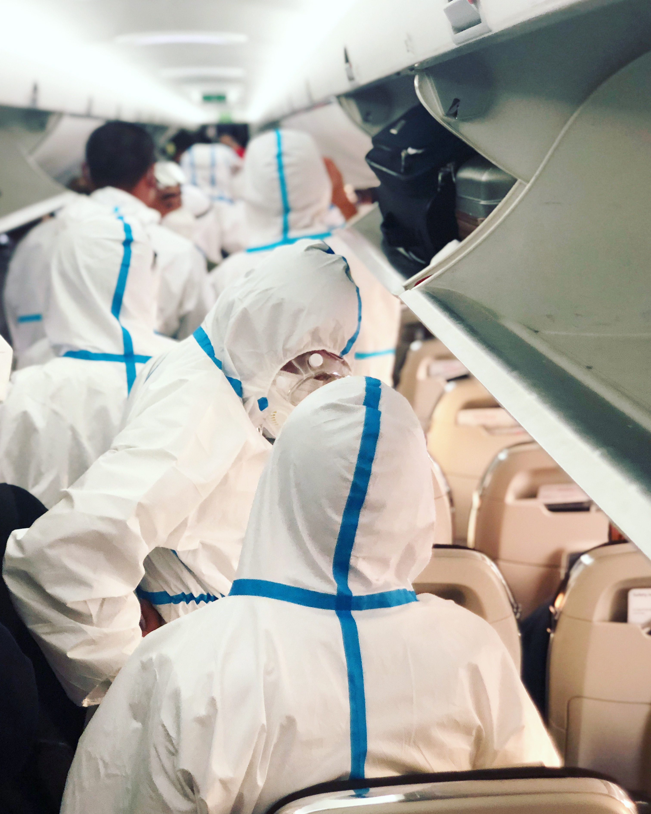
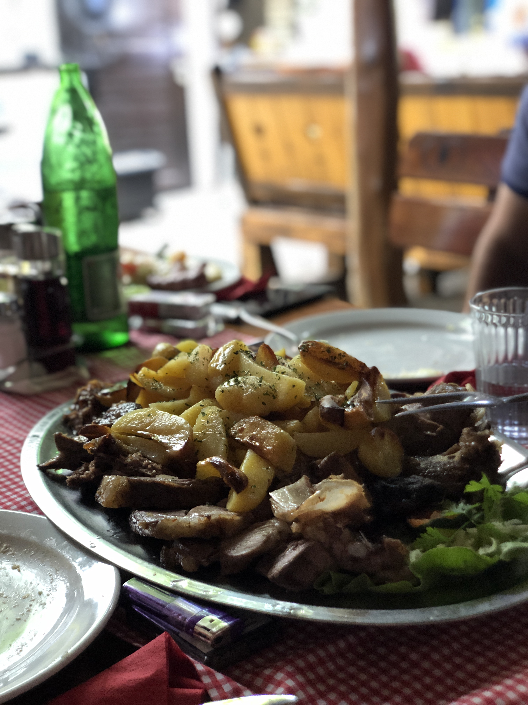
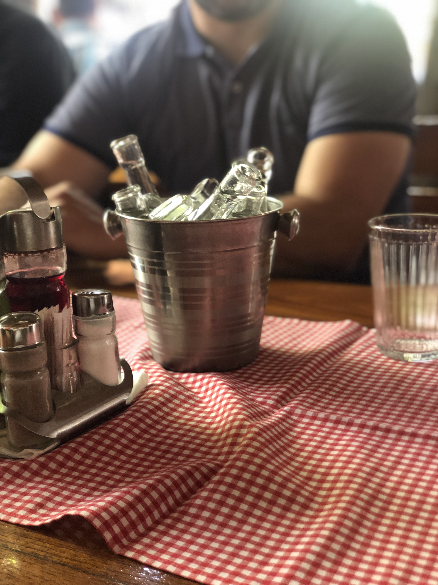
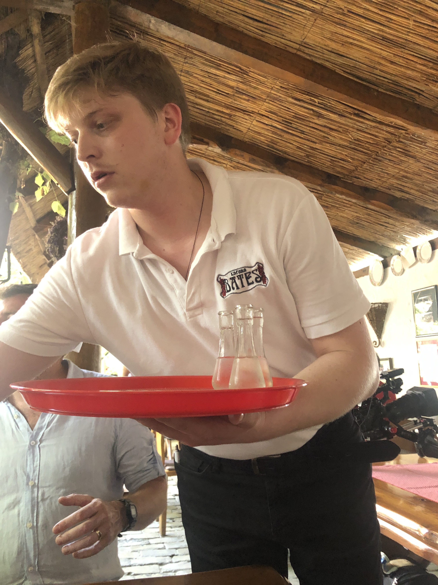

Bates
The bartender said drink rakia and eat the meat platter. He was right.
I don't fully remember how I ended up in Subotica. It was still Covid times and I'm fairly sure I actually had Covid at the time. We found this place — Bates, a big outdoor spot with thatched roofs and long wooden tables — and the bartender took one look at the situation and prescribed the solution: little glass vials of rakia, and the meat platter.
He was completely correct. This was also, I think, one of the first meals I'd eaten with other humans since the pandemic started, which probably accounted for some of the magic. But the food was genuinely good — a proper piled-up platter of mixed meats with potatoes, the kind of thing that arrives and makes you feel immediately more optimistic about everything.


"The more of those little glass vials I drank, the more memorable the meal became. The more my covid went away."


Bates, Vuka Karadžića 17, Subotica. If you find yourself in Subotica — and it is a genuinely interesting city, Art Nouveau architecture, close to the Hungarian border, very much off the usual trail — come here and get the meat platter. Order the rakia. Trust the bartender.
The rakia comes in little cold glass vials on a bucket of ice. You will feel better. That's the tip.